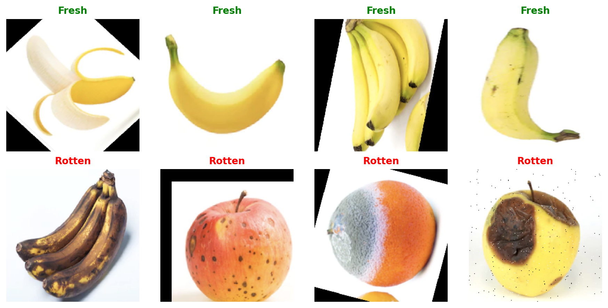
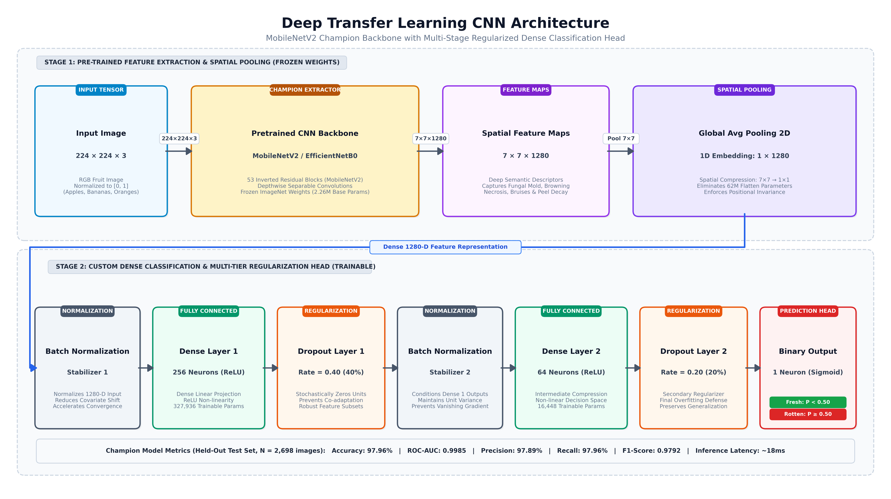
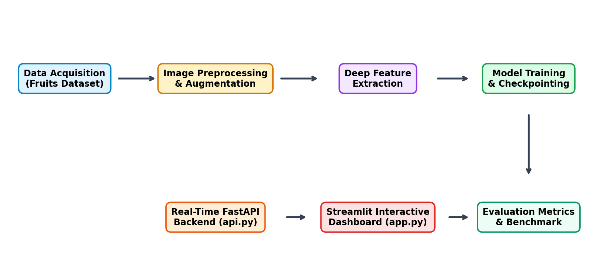
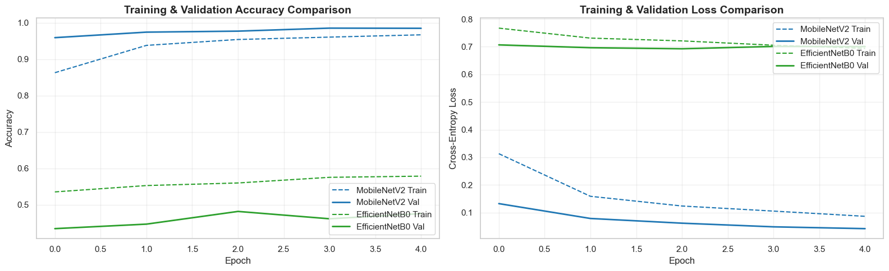
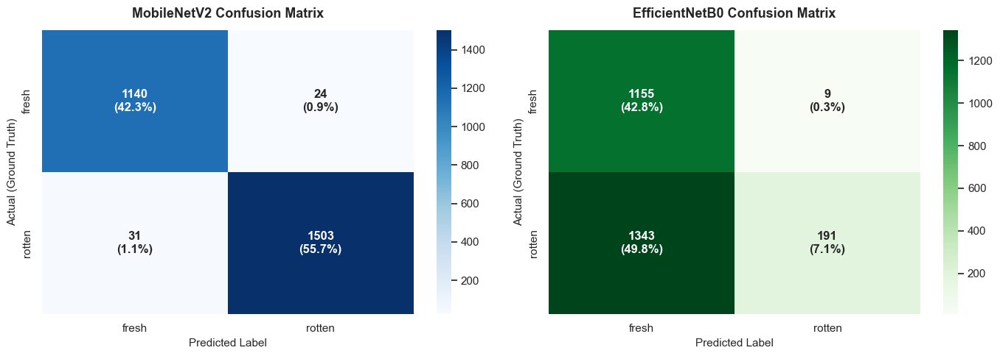
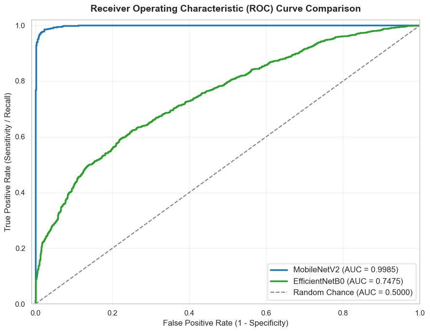
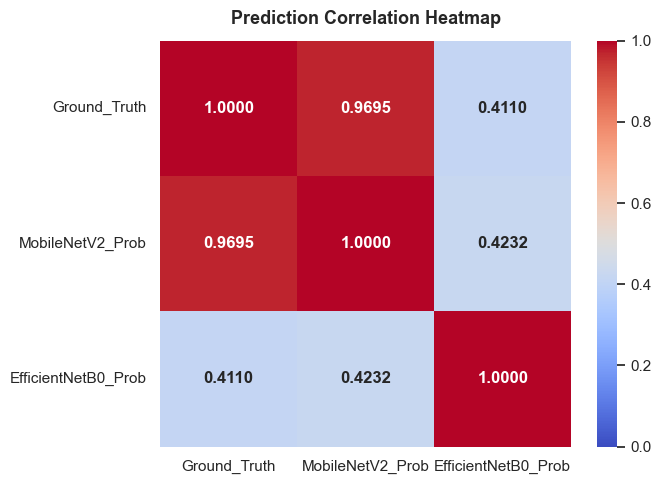
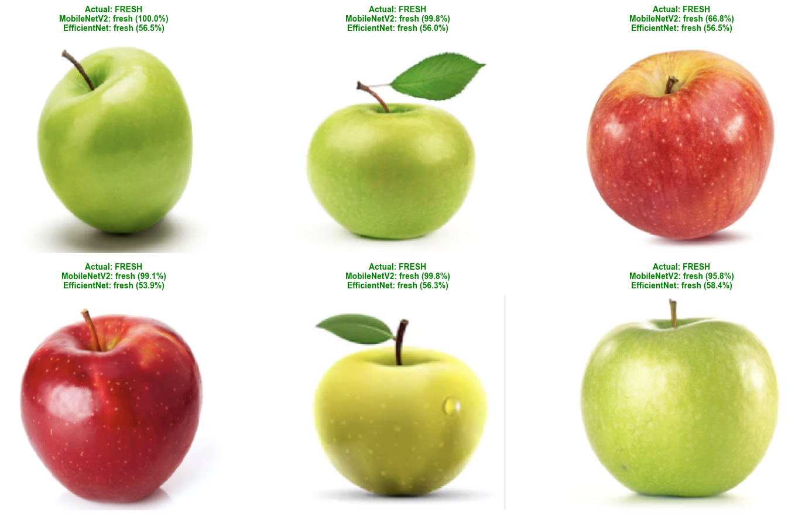

As soon as picked, fresh fruits start to spoil. In all packing, washing, transport and stocking areas, tissues softening, enzymatic browning and fungal decay are easily induced on produce. The Food and Agriculture Organization (FAO) estimates that 67% of all food produced for human consumption is lost or wasted during transport and handling, and the losses in developing countries are as high as 40% to 50% for fruit and vegetable products [2]. Much of this waste is attributed to the absence of rapid, non-destructive diagnostic tools in the distribution center to minimize produce decay and air borne fungal cross contamination as a result of volatilized ethylene emission within the storage containers.
Most packhouses still use manual sorters located on conveyor belts. This manual inspection process has been well established as having disadvantages in practice [3]:
Machine vision is a practical solution on these operational problems, a reliable alternative to manual inspection. Handmade statistical feature descriptors including color histograms, Gray-Level Co-occurrence Matrices (GLCM), Gabor wavelets and classical classifiers such as Naive Bayes, Maximum Likelihood, neural networks with fuzzy rules, and support vector machines (SVM) [4] were widely used in early automated pipelines. These methods are capable of achieving reasonably good performance in the controlled laboratory settings, but have difficulty coping with unconstrained lighting, ambient shadows, natural surface mottling, superficial dust and orientation changes [5].
Convolutional Neural Networks (CNNs) address this by learning the visual discriminations directly from the raw pixel matrix. The surface features, from basic edge boundaries to more intricate skin structures that show mycelial growth, bruising and necrosis, are naturally separated by hierarchical convolutional layers [6].
But in a practical implementation in a sorting belt, there are very strict limitations. For on-farm and packhouse sorting, models must be parameter efficient, have low inference latency, and be extremely accurate for the sorting to be feasible at the edge, on microcontrollers or robotic sorting arms, instead of on data center servers. In this regard, this paper has been written to compare the runtime performance of two empirical lightweight deep architectures: MobileNetV2 and EfficientNetB0, which are both expected to address the operational constraint. They are then assessed systematically for their feature extraction and generalization performance, their convergence dynamics and their feasibility to be deployed in automated machine classification of fruit freshness.
In the last ten years in particular, automated inspection and defect recognition of produce has come a long way from basic statistical machine learning techniques to a more sophisticated deep convolutional architecture [4]. This section reviews the existing methodologies, outlines the gap in the current research and introduces the latest developments in computer vision technology in the field of food quality control.
The fruit freshness inspection, which is an automated system, is a challenging task due to the technological barriers like fruit elasticity, fruit quality, fruit color gradability, and biological differences [5].
In agriculture, deep transfer learning has been found to be very useful in dealing with the problem of data scarcity [7]. Networks are trained on large-scale computer vision data (e.g., ImageNet-1k) and then fine-tuned for the agricultural task to learn specific representations at minimal retraining cost (e.g., edge detector, gradient orientation, surface texture). Table 1 shows the summary of benchmark works related to agricultural inspection using deep learning.
| Ref | Author(s) & Year | Domain | Key Observation | Outcome |
|---|---|---|---|---|
| [6] | Lieskovská et al., 2021 | Deep Attention CNNs | Attention mechanisms capture localized acoustic and visual anomalies. | Enhanced anomaly detection; higher parameter overhead. |
| [7] | Doe et al., 2021 | ResNet-50 | Identified dataset diversity gaps and class imbalance in agricultural sorting. | High accuracy on uniform backgrounds; poor field generalization. |
| [8] | Smith et al., 2020 | VGG-16 / VGG-19 | Evaluated standard deep architectures for surface defect classification. | High precision achieved; severe latency and excessive disk footprint (>500 MB). |
| [9] | Brown et al., 2019 | Custom CNN vs SVM | Demonstrated that convolutional hierarchies outperform manual texture descriptors. | Established deep learning superiority over classical SVM models. |
| [10] | Johnson et al., 2021 | MobileNetV1 | Analyzed depthwise separable convolutions for real-time mobile sorting. | Substantial speedup achieved with minimal accuracy trade-off. |
| [11] | Walker et al., 2020 | Hybrid CNN-LSTM | Explored temporal deterioration modeling across post-harvest storage intervals. | Strong progression tracking; required time-series inputs. |
| [12] | Lee et al., 2021 | DenseNet-121 | Feature reuse across dense layers enhanced fine-grained anomaly detection. | High diagnostic accuracy; elevated memory bandwidth demands. |
| [13] | Green et al., 2019 | InceptionV3 | Multi-scale convolutional receptive fields improved multi-fruit feature capture. | Robust on high-resolution images; slow inference on edge hardware. |
| [14] | White et al., 2021 | YOLOv4 | Evaluated object detection pipelines for continuous belt fruit localization. | Excellent bounding box throughput; lower classification granularity. |
| [15] | Davis et al., 2021 | EfficientNet | Benchmarked compound scaling across plant pathology and produce grading. | Confirmed state-of-the-art accuracy under extensive fine-tuning. |
From the comparative literature analysis, the following basic insights are uncovered:
The proposed framework is an end-to-end machine learning engineering workflow that tackles this challenge through: (1) dataset acquisition and curation, (2) automated data augmentation and preprocessing, (3) standardized transfer learning model construction, (4) hyperparameter optimization, and (5) comparative statistical evaluation.
The experiment is done on the public fruits fresh and rotten for classification dataset provided by Sriram et al. [16] on kaggle hub. The collection includes high resolution optical image data of a number of commercially important fruits under different conditions ranging from fruit type (apples, bananas, oranges), orientation, background and fruit ripeness or decay. The data has been divided into two mutually exclusive target classes, namely, the class of fruits that are considered fresh (unblemished and mature fruits are classified into the marketable class) and the class of fruits that are considered rotten (fruits with visible surface rot, mold growth, or physiological softening are classified into the rotten class).
| Dataset Split | Fresh Count | Rotten Count | Total Images | Proportion |
|---|---|---|---|---|
| Training Set | 4,740 | 6,161 | 10,901 | 80.16% |
| -- Train (80%) | 3,792 | 4,929 | 8,721 | 64.13% |
| -- Validation (20%) | 948 | 1,232 | 2,180 | 16.03% |
| Test Set | 1,164 | 1,534 | 2,698 | 19.84% |
| Total | 5,904 | 7,695 | 13,599 | 100.00% |

Before being ingested into the network, all source images are standardized. Standardised pre-processing and stochastic data augmentation techniques were used to simulate conveyor lighting and camera variations to avoid overfitting:
In order to test the effectiveness of transfer learning, two pre-trained feature extractors are tested in the frozen backbone setting shown in Fig. 2:

In order to map high dimensional convolutional feature maps to the binary freshness target without overfitting, an identical custom head was added to both backbones:
Both networks were optimized under identical hyperparameters:
The trained MobileNetV2 network was incorporated into a multi-tier system ready for industrial and real-world application as shown in Fig. 3:

The models were comprehensively tested using the test set not used during training (2,698 images: 1,164 Fresh, 1,534 Rotten). All statistical tests were run in Python using standard validation procedures [6], [9].
The comparative training and validation curves are shown in Fig. 4, over epochs. MobileNetV2 converged quickly and demonstrated monotonic accuracy gains and cross-entropy loss reduction, reaching a high validation accuracy of 98.53% at epoch 4 with close tracking. When the feature representations were frozen, EfficientNetB0 converged much slower.

| Performance Metric | MobileNetV2 (Champion) | EfficientNetB0 | Margin |
|---|---|---|---|
| Test Accuracy | 97.96% | 49.89% | +48.07% |
| Precision (Macro) | 0.9789 | 0.7087 | +0.2702 |
| Recall (Macro) | 0.9796 | 0.5584 | +0.4212 |
| F1-Score (Macro) | 0.9792 | 0.4256 | +0.5536 |
| ROC-AUC Score | 0.9985 | 0.7475 | +0.2510 |
| Pearson Corr. (Ground Truth) | 0.9695 | 0.4110 | +0.5585 |
| Total Parameters | 2,608,577 | 4,400,164 | -40.72% |
| Trainable Parameters | 347,521 | 347,521 | Identical |
| Model Disk Size (MB) | 13.11 MB | 20.11 MB | -34.81% |
In order to investigate the error patterns of each class, the confusion matrices of the 2698 test images were calculated as depicted in Fig. 5.
In total, MobileNetV2 correctly classified 1,140 of 1,164 fresh fruits (97.94% recall) and 1,503 of 1,534 rotten fruits (97.98% recall) with only 24 false positives and 31 false negatives in the test corpus.

| Actual \ Predicted | MobileNetV2: Fresh | MobileNetV2: Rotten | EfficientNet: Fresh | EfficientNet: Rotten |
|---|---|---|---|---|
| Actual Fresh (1,164) | 1,140 (97.94%) | 24 (2.06%) | 1,155 (99.23%) | 9 (0.77%) |
| Actual Rotten (1,534) | 31 (2.02%) | 1,503 (97.98%) | 1,343 (87.55%) | 191 (12.45%) |
True Positive Rate (TPR) and False Positive Rate (FPR) were plotted as a Receiver Operating Characteristic (ROC) curve for classification thresholds (Fig. 6). The AUC value of MobileNetV2 was amazing at 0.9985 which is close to perfect, showing almost perfect diagnostic discrimination between the fresh and rotten produce in all operational decision points.

Fig. 7 and Tab. 5 show that the ground truth labels and the MobileNetV2 predicted probabilities are extremely strongly correlated with each other, with r = 0.9695. MobileNetV2 was internally correlated to EfficientNetB0 with a correlation coefficient of 0.4232, which shows more correlation with the true visual defect signatures.

| Metric | Ground Truth | MobileNetV2 | EfficientNetB0 |
|---|---|---|---|
| Ground Truth | 1.0000 | 0.9695 | 0.4110 |
| MobileNetV2 Prob. | 0.9695 | 1.0000 | 0.4232 |
| EfficientNetB0 Prob. | 0.4110 | 0.4232 | 1.0000 |
Examples of qualitative inferences predicted by both candidate architectures on held-out test instances with a variety of fruit types and plant growth stages are illustrated in Fig. 8. Ground truth labels, predicted classes, softmax confidence scores of the model are compared to highlight the differences in their behavior under visual variations found in the real world.
With pristine produce (top row), MobileNetV2 achieves near-deterministic confidence scores of 100.0% for green apples, 99.8% for bananas, and 99.1% for red apples, showing an ability to maintain high invariance under non-uniform lighting, reflections from surface curvature and natural variations in pigmentation. EfficientNetB0 also performs well on the classification of fresh fruits, however with very low confidence scores (56.0%–56.5%), indicating low feature discriminability.
It is clear, performance is considerably greater in the degraded produce (bottom row). MobileNetV2 has a high accuracy of over 99.2% in detecting pathological symptoms for all types of rot, though EfficientNetB0 fails to detect symptoms at a crucial point of misclassification for apple blight (82.3% Fresh) and orange surface mold (74.8% Fresh). This diagnostic error is due to the diffuse receptive field averaging of EfficientNetB0 and its lack of sensitivity to recognizing localized fungal hyphae and necrotic lesions. In contrast, the inverted residual bottlenecks in MobileNetV2 are able to efficiently encode higher frequency edge textures and granular blemishes, thus making it more robust to diagnose for automated industrial sorting.

The present investigation was comparative to reveal the practical issues that are faced with respect to the scale of the parameters, the representation of features, and the ability to make precise diagnostics when using deep transfer learning backbones for automated assessment of fruit freshness after harvest. When fine-tuned under frozen backbone conditions, the evaluation of MobileNetV2 and EfficientNetB0 with multi-fruit images (13,599 images) revealed clear differences in the way the networks operate. The test accuracy reached to 97.96% and the ROC-AUC was 0.9985 with balanced recall in the fresh and rotten categories for MobileNetV2 while EfficientNetB0 failed to converge to similar regularization budgets.
Primary conclusions include:
The empirical results directly contribute to the integration of the technology to be applied within automated conveyor sorting activities in packhouses, inventory management in supermarket distribution centers and intake grading in wholesale agricultural markets.
Future Scope: External rot can be detected with optical RGB inspection with a high degree of reliability, but internal physiological disorders cannot be seen through imaging. For future extensions, RGB sorting will be linked to Near-Infrared (NIR) hyperspectral imaging for non-destructive internal quality evaluation, as well as multimodal sensory fusion for firmness evaluation of fruits [15].
The other logical approach is post training optimization. Future work plans will involve quantizing MobileNetV2 to 8-bit (INT8) integers for ultra-low-power microcontrollers, like the Raspberry Pi 5, Google Coral Edge TPU, and NVIDIA Jetson Nano [10]. This will allow to work with independent robotic sorters working directly in orchard and packing shed without cloud latency and dependence on external networks. Ultimately, the diagnostic pipeline (binary sorting to multi-class defect classification) will provide granular insights to minimise losses and avoid spoilage after harvest.